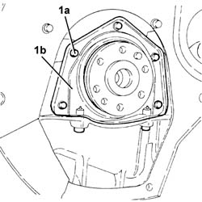

1020D36 flywheel end oil seal - replace for manual gearbox with hydraulic selection versions
- Path
- Procedures > 10 ENGINE > 1020 CRANKCASE SUMP AND COVERS > 1020D oil seals on crank shaft > 1020D36 flywheel end oil seal - replace for manual gearbox with hydraulic selection versions
- Kind
- repair procedure (removal / refitting; the operation number is the code)
- Applies to
- engines: 2.0 TS, 3.2 V6; all production periods
- Interactive page
- https://sloeber94.github.io/elrnDB-a147/en/#/3024929
Applies to: engines: 2.0 TS; all production periods; only with equipment: Cambio robotizzato
 Removing
Removing
 Refitting
RefittingProceed with the removal 5530B10 battery - r+r .
Proceed with the removal 5530B52 Battery DRIP TRAY/SUPPORT - R.R. .
Proceed with the removal 4450B12 front or rear wheels (two) - r+r .
Proceed with the removal 7055B64 Engine compartment DUST shield in front wheel arch (one), left or right - R.R. (Right and left sides).
Proceed with the removal 7055B42 Additional FRONT WHEEL ARCH (one), left or right - R.R. (Right and left sides).
Proceed with the removal 7055B54 under-engine guard - r r .
Proceed with the removal 2127C40 hydraulic speed selection hydraulic actuator unit and clutch - r r .
Proceed with the removal 1016A40 ignition coil cover on cylinder head- r+r .
Proceed with the removal 1072C44 exhaust manifold heat shield on bulkhead - r+r .
Proceed with the removal 2110A11 manual gearbox with differential - r r for versions with hydraulic selection .
Proceed with the removal 1810A28 clutch - r r for manual gearbox with hydraulic selection versions .
Proceed with the removal 1024B11 engine flywheel - r r for manual gearbox with hydraulic selection versions .
1. Undo the bolts (1a) and remove the flywhell side oil cover (1b) with built in oil seal.

Applies to: engines: 2.0 TS; all production periods; only with equipment: Cambio robotizzato
Refitting
RemovingFit the flywheel side oil cover with the integrated oil seal and tighten the bolts to the recommended torque.
 | Fastening | Component | Ø | Value (daNm) |
|---|---|---|---|---|
- | Bolt | CRANKSHAFT REAR COVER | M6 | (Engine crankcase side) 0.8 ÷ 1.0 |
Proceed with the refitting 1024B11 engine flywheel - r r for manual gearbox with hydraulic selection versions .
Proceed with the refitting 1810A28 clutch - r r for manual gearbox with hydraulic selection versions .
Proceed with the refitting 2110A11 manual gearbox with differential - r r for versions with hydraulic selection .
Proceed with the refitting 1072C44 exhaust manifold heat shield on bulkhead - r+r .
Proceed with the refitting 1016A40 ignition coil cover on cylinder head- r+r .
Proceed with the refitting 2127C40 hydraulic speed selection hydraulic actuator unit and clutch - r r .
Refill the manual gearbox and differential 2110A04 Manual gearbox and differential OIL - Check level and top up, if necessary .
Proceed with the refitting 7055B54 under-engine guard - r r .
Check the level of the fluid in the electro-hydraulic selection gearbox and if necessary top it up 2127C04 ELECTROHYDRAULIC selection gearbox hydraulic system FLUID - Check level and top up if necessary. .
Bleed the air from the electro-hydraulic selection gearbox hydraulic system 2127C06 Electro-hydraulic selection manual gearbox HYDRAULIC SYSTEM - Bleeding air .
Proceed with the removal 7055B42 Additional FRONT WHEEL ARCH (one), left or right - R.R. (Right and left sides).
Proceed with the removal 7055B64 Engine compartment DUST shield in front wheel arch (one), left or right - R.R. (Right and left sides).
Proceed with the refitting 4450B12 front or rear wheels (two) - r+r .
Proceed with the refitting 5530B52 Battery DRIP TRAY/SUPPORT - R.R. .
Proceed with the refitting 5530B10 battery - r+r .
Applies to: engines: 3.2 V6; all production periods; only with equipment: Cambio robotizzato
Removing
RefittingProceed with removal 5530B10 battery - r+r .
Proceed with removal 5530B52 Battery DRIP TRAY/SUPPORT - R.R. .
Proceed with removal 1048A10 air cleaner filtering element - replace .
Proceed with removal 7055B54 under-engine guard - r r .
Proceed with removal 2127C40 hydraulic speed selection hydraulic actuator unit and clutch - r r .
Proceed with removal 2127C48 GEAR ENGAGEMENT ELECTRO-HYDRAULIC SELECTION DEVICE - R.R. .
Proceed with removal 4450B12 front or rear wheels (two) - r+r .
Proceed with removal 7055B90 Left front WHEEL ARCH LINER - R.R. .
Proceed with removal - 7055A43 central front grille - r r .
Proceed with removal 7055A41 RIGHT FRONT GRILLE - R.R. .
Proceed with removal 7210E10 R.R. CENTRE PILLAR .
Proceed with the removal - 5540B16 FRONT LIGHT CLUSTER with direction indicator (one), left or right - R.R. , bearing in mind that it is not necessary to lower the front bumper since it has already been removed.
Proceed with removal 7025A34 bonnet lid lock (one) - r+r or repair .
Proceed with removal - 7090G06 HEADLAMP HOUSING CONNECTING CROSSMEMBER - Replace. .
Proceed with removal 1088E11 fans with single engine duct - r+r .
Proceed with removal 1008C10 power unit upper reaction link r r .
Proceed with removal 1076B82 left exhasust pipe between catalytic preconverter and converter r r .
Proceed with removal 1076B84 right exhaust pipe between caralytic preconverter and converter r r .
Proceed with removal 1008A42 gear box left rigid mount - r r .
Proceed with removal 1008A44 rear rigid mount - r r .
Proceed with removal 2110A11 manual gearbox with differential - r r for versions with hydraulic selection .
Proceed with removal 1810A28 clutch - r r for manual gearbox with hydraulic selection versions .
Proceed with removal 1024B22 engine flywheel - r r with clutch or gearbox removed .
Proceed with removal 1020D40 flywheel end oil seal- r+r with flywheel removed .
Applies to: engines: 3.2 V6; all production periods; only with equipment: Cambio robotizzato
Refitting
RemovingProceed with refitting 1020D40 flywheel end oil seal- r+r with flywheel removed .
Proceed with refitting 1024B22 engine flywheel - r r with clutch or gearbox removed .
Proceed with refitting 1810A28 clutch - r r for manual gearbox with hydraulic selection versions .
Proceed with refitting 2110A11 manual gearbox with differential - r r for versions with hydraulic selection .
Proceed with refitting 1008A44 rear rigid mount - r r .
Proceed with refitting 1008A42 gear box left rigid mount - r r .
Proceed with refitting 1076B84 right exhaust pipe between caralytic preconverter and converter r r .
Proceed with refitting 1076B82 left exhasust pipe between catalytic preconverter and converter r r .
Proceed with refitting 1008C10 power unit upper reaction link r r .
Proceed with refitting 1088E11 fans with single engine duct - r+r .
Proceed with refitting - 7090G06 HEADLAMP HOUSING CONNECTING CROSSMEMBER - Replace. .
Proceed with refitting 7025A34 bonnet lid lock (one) - r+r or repair .
Proceed with refitting - 5540B16 FRONT LIGHT CLUSTER with direction indicator (one), left or right - R.R. .
Proceed with refitting 7210E10 R.R. CENTRE PILLAR .
Proceed with refitting 7055A41 RIGHT FRONT GRILLE - R.R. .
Proceed with refitting - 7055A43 central front grille - r r .
Proceed with refitting 7055B90 Left front WHEEL ARCH LINER - R.R. .
Proceed with refitting 4450B12 front or rear wheels (two) - r+r .
Refill the gearbox/differential using the recommended fluid 0010T40 change manual gearbox oil .
Proceed with refitting 2127C48 GEAR ENGAGEMENT ELECTRO-HYDRAULIC SELECTION DEVICE - R.R. .
Proceed with refitting 2127C40 hydraulic speed selection hydraulic actuator unit and clutch - r r .
Proceed with refitting 1048A10 air cleaner filtering element - replace .
Proceed with refitting 0010T47 hydraulic system fluid for gearbox with hydraulic selection check level and top up if necessary .
Proceed with refitting 0010T48 hydraulic system for gearbox with hydraulic selection bleed air .
Proceed with refitting 5530B52 Battery DRIP TRAY/SUPPORT - R.R. .
Proceed with refitting 5530B10 battery - r+r .
Proceed with refitting 7055B54 under-engine guard - r r .
Topics linked from this page (32)
- 0010T40 change manual gearbox oil
- 0010T47 hydraulic system fluid for gearbox with hydraulic selection check level and top up if necessary
- 0010T48 hydraulic system for gearbox with hydraulic selection bleed air
- 1008A42 gear box left rigid mount - r r
- 1008A44 rear rigid mount - r r
- 1008C10 power unit upper reaction link r r
- 1016A40 ignition coil cover on cylinder head- r+r
- 1020D40 flywheel end oil seal- r+r with flywheel removed
- 1024B11 engine flywheel - r r for manual gearbox with hydraulic selection versions
- 1024B22 engine flywheel - r r with clutch or gearbox removed
- 1048A10 air cleaner filtering element - replace
- 1072C44 exhaust manifold heat shield on bulkhead - r+r
- 1076B82 left exhasust pipe between catalytic preconverter and converter r r
- 1076B84 right exhaust pipe between caralytic preconverter and converter r r
- 1088E11 fans with single engine duct - r+r
- 1810A28 clutch - r r for manual gearbox with hydraulic selection versions
- 2110A04 Manual gearbox and differential OIL - Check level and top up, if necessary
- 2110A11 manual gearbox with differential - r r for versions with hydraulic selection
- 2127C04 ELECTROHYDRAULIC selection gearbox hydraulic system FLUID - Check level and top up if necessary.
- 2127C06 Electro-hydraulic selection manual gearbox HYDRAULIC SYSTEM - Bleeding air
- 2127C40 hydraulic speed selection hydraulic actuator unit and clutch - r r
- 2127C48 GEAR ENGAGEMENT ELECTRO-HYDRAULIC SELECTION DEVICE - R.R.
- 4450B12 front or rear wheels (two) - r+r
- 5530B10 battery - r+r
- 5530B52 Battery DRIP TRAY/SUPPORT - R.R.
- 7025A34 bonnet lid lock (one) - r+r or repair
- 7055A41 RIGHT FRONT GRILLE - R.R.
- 7055B42 Additional FRONT WHEEL ARCH (one), left or right - R.R.
- 7055B54 under-engine guard - r r
- 7055B64 Engine compartment DUST shield in front wheel arch (one), left or right - R.R.
- 7055B90 Left front WHEEL ARCH LINER - R.R.
- 7210E10 R.R. CENTRE PILLAR